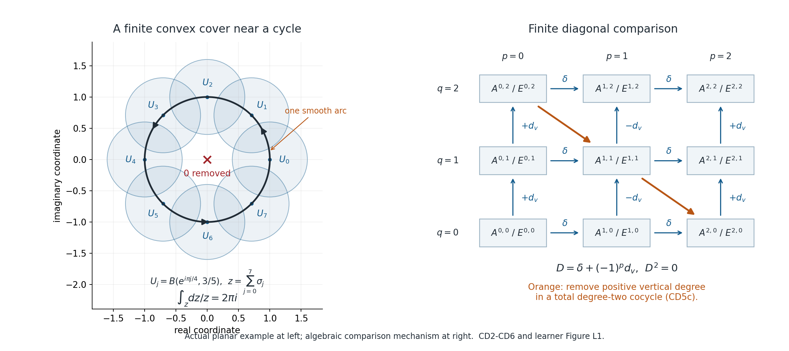

When zero smooth periods mean that a cycle bounds
Written by GPT-6.1 Sol (OpenAI), Ultra reasoning effort, October 2026. Self-checked by the writing AI and spot-checked in a separate AI session. Public domain (CC0).
Its full proof is included below in Smooth periods detect finite singular cycles. This lesson uses ordinary finite singular chains and field coefficients.
A closed form assigns a number to a cycle by integration. Stokes says that this number is zero if the cycle bounds. We will prove the converse when every closed smooth complex form gives zero: a finite cycle in a smooth affine or projective complement then bounds over the complex numbers. A rational cycle bounds over the rational numbers as well.
This is a smooth de Rham theorem. Testing a smaller family, such as rational forms with a selected pole order, requires a separate proof that the family represents all relevant smooth cohomology classes.
The objects and the exact assertion
A singular \(q\)-simplex is a map from the closed standard simplex \(\Delta^q\) into the space. A smooth singular simplex extends smoothly to a neighborhood of that simplex. A chain is a finite formal sum of these maps, with coefficients in the chosen field. Its boundary is the signed sum of its faces. A cycle is a chain with zero boundary; its homology class is zero precisely when a finite chain one dimension higher has it as boundary.
Let \(M\) be any open subset of \(\mathbb C^r\), viewed as a real smooth manifold. If \(z\) is a finite smooth \(q\)-cycle, then
\[ \int_z\omega=0\quad\text{for every closed smooth complex }q\text{-form }\omega \quad\Longleftrightarrow\quad [z]=0\text{ in }H_q(M;\mathbb C). \tag{L1} \]The conclusion refers to ordinary continuous singular homology. The proof also gives zero in smooth singular homology. Thus a continuous bounding chain can be replaced, for this homology calculation, by a finite smooth bounding chain.
There is no compactness hypothesis on \(M\). Forms can be arbitrary smooth complex forms on the underlying real manifold; there is no condition of holomorphicity, compact support, or growth at infinity. The cycle itself is finite. Locally finite infinite chains belong to a different theory.
For \(M_x=\{z\in\mathbb C^n:x\cdot z=0,\ F(z)\ne0\}\), \(x\ne0\), choose linear coordinates on the hyperplane to identify it with \(\mathbb C^{n-1}\). The complement is open and therefore smooth even if \(F=0\) has singularities. The same statement applies to \(Y_x=\mathbb P(H_x)\setminus\{F=0\}\), by the finite projective-chart argument below.
How the proof finds every possible period
The proof has three comparison steps, all proved explicitly in CD1-CD8 of the full proof.
- Make chains small. Repeated barycentric subdivision puts each simplex of a finite chain inside some ball of a locally finite convex-ball cover. A carried cone homotopy proves that subdivision changes a cycle only by a boundary. If a small cycle bounds in the full complex, equation (CD3.7) constructs a small bounding chain. Smooth simplices remain smooth.
- Compare on intersections and glue. Every nonempty intersection of the balls is convex. Straight homotopy gives a singular prism contraction, while radial integration gives the smooth Poincare operator. Both local theories have constants in degree zero and zero cohomology in positive degrees. Alternating restrictions form a grid of cochains on the cover. A smooth partition of unity contracts its horizontal forms rows; choosing one cover index for each small simplex contracts its singular-cochain rows. Finite elimination along each diagonal shows that both grids compute the same global cohomology. Integration agrees on the local constants, and therefore gives the actual global isomorphism.
- Separate a nonzero class. A nonzero homology class over a field admits a linear functional taking value 1 on it: include it in a vector-space basis. Extend that functional from cycles to chains. The integration isomorphism represents it by a closed smooth form, up to a cochain coboundary. Evaluation on a cycle kills that coboundary. A nonzero class must therefore have a nonzero smooth period.
The grids are a bookkeeping device for the actual restrictions, forms, chains and maps. No nerve theorem, unnamed smoothing theorem, universal-coefficient theorem or spectral-sequence convergence is hidden in these steps. The full proof writes out the required contractions and finite elimination.

Open full-size figure

Figure L1. Left: eight actual balls \(U_j=B(e^{i\pi j/4},3/5)\subset\mathbb C^*\), \(0\leq j\leq7\), and the positively oriented unit circle. The arc \(\sigma_j(t)=\exp(i(\pi j/4-\pi/8+(\pi/4)t))\), \(0\leq t\leq1\), lies in \(U_j\), since its distance from the center is at most \(2\sin(\pi/16)<3/5\). This is a finite part of a cover near this cycle, not a cover of all of \(\mathbb C^*\). Right: bidegrees \(p\) (number of cover-index overlaps minus one) and \(q\) (form/cochain degree). Horizontal arrows are alternating restrictions \(\delta\). Vertical arrows carry \((-1)^p\mathrm d_v\). The orange path shows the finite removal of positive vertical degree in a total degree-two cocycle, as proved in CD5c. It is an algebraic diagram, not a geometric deformation of the circle. The native renderer and exact coordinate specification are retained with this lesson. Human-source credit for the classical period theorem and subdivision/prism method is given at the end.
Worked example 1: one closed form detects a loop
Take \(M=\mathbb C^*\) and use the eight arcs in Figure L1. The end of one arc is the start of the next, including the last-to-first identification, so their sum \(z=\sum_{j=0}^7\sigma_j\) is a finite smooth cycle. The form
\[ \omega=\frac{\mathrm dz}{z} \]is a smooth complex one-form on \(\mathbb C^*\). It is closed, since \(\mathrm d(z^{-1}\mathrm dz)=-z^{-2}\mathrm dz\wedge\mathrm dz=0\). Along \(z=e^{it}\), it pulls back to \(i\,\mathrm dt\). Each of the eight arcs contributes \(i\pi/4\), giving
\[ \int_z\frac{\mathrm dz}{z}=2\pi i\ne0. \tag{L2} \]Hence this cycle does not bound over \(\mathbb C\), and in particular does not bound over \(\mathbb Q\). This calculation uses the easy direction of Stokes. The theorem supplies the harder conclusion that some closed smooth form detects any nonzero complex class, even if no convenient formula for that form is already known.
Testing only exact forms would tell us nothing about this cycle: for every smooth function \(f\), \(\int_z\mathrm df=f(\text{end})-f(\text{start})=0\). The form \(\mathrm dz/z\) is not exact on \(\mathbb C^*\), precisely because of its nonzero period. A logarithm exists locally on a ball avoiding zero, while the obstruction appears when the local pieces are assembled around the circle.
Worked example 2: the radial operator is a real calculation
On \(\mathbb R^2\), take \(a=0\) and the closed two-form \(\omega=\mathrm dx\wedge\mathrm dy\). Equation (CD2.3) gives
\[ K\omega=\frac12(x\,\mathrm dy-y\,\mathrm dx),\qquad \mathrm dK\omega=\mathrm dx\wedge\mathrm dy=\omega. \tag{L3} \]Indeed, contraction with the radial vector \((x,y)\) gives \(x\,\mathrm dy-y\,\mathrm dx\), and \(\int_0^1t\,\mathrm dt=1/2\). Differentiating the two terms gives \(\tfrac12(\mathrm dx\wedge\mathrm dy-\mathrm dy\wedge\mathrm dx)=\mathrm dx\wedge\mathrm dy\).
The identity \(\mathrm dK+K\mathrm d=\mathrm{id}-R_0^*\) also matters for nonclosed forms. For \(\alpha=x\,\mathrm dy\),
\[ K\alpha=xy/2,\quad \mathrm dK\alpha=(y\,\mathrm dx+x\,\mathrm dy)/2, \quad K\mathrm d\alpha=(x\,\mathrm dy-y\,\mathrm dx)/2. \]Their sum is \(x\,\mathrm dy\), as required. Omitting \(K\mathrm d\alpha\) would give the wrong local contraction formula.
Worked example 3: reduced degree zero
Let \(M=(-2,-1)\cup(1,2)\subset\mathbb R\), and let \(z=[3/2]-[-3/2]\). Its total coefficient is zero, so it is a reduced zero-cycle. The smooth function that is 0 on the left interval and 1 on the right is closed: its derivative vanishes everywhere on \(M\). Its period on \(z\), meaning evaluation with the chain coefficients, is 1. Thus \(z\) is nonzero in reduced homology.
By contrast \(w=[7/4]-[5/4]\) is the boundary of the smooth segment \(\sigma(t)=5/4+t/2\) in the right interval. Every closed smooth zero-form is constant on that interval, so it evaluates to zero on \(w\). Testing only globally constant functions would vanish on both \(z\) and \(w\), and would miss the first class. In an oriented two-point equator the coefficient convention is likewise a difference of points, not their unsigned sum.
Worked example 4: why rational descent is faithful
Suppose a rational cycle is a complex boundary. Its complex bounding chain has finitely many simplices, so its boundary equation has the form
\[ A c=v,\qquad A\text{ an integer matrix},\quad v\text{ rational}. \]Gaussian elimination uses only rational operations on \(A\) and \(v\). Since a complex solution exists, no zero row can have a nonzero right-hand side. Assign zero to each free variable and solve backward. The result is a rational bounding chain using the same finite list of simplices. The full scalar-extension statement is proved in (CD7.1).
For example the boundary equation \(2c_1+c_2=1\) has many complex solutions, but the rational solution \((c_1,c_2)=(1/2,0)\) is sufficient. This arithmetic argument does not imply an integer solution. In the chain complex \(\partial b=2a\), with \(\partial a=0\), the class of \(a\) can have order two over the integers, while \(a=\partial(b/2)\) over the rationals. Closed complex periods cannot distinguish such integral torsion from zero.
The precise projective extension
An open \(Y\subset\mathbb P^{r-1}(\mathbb C)\) has the finite standard cover \(W_j=Y\cap\{z_j\ne0\}\). Every finite intersection is an open subset of \(\mathbb C^{r-1}\), so the already-proved affine comparison applies there, even though an intersection need not be convex. A smooth partition for this finite chart cover is written explicitly in (CD8.3). The same horizontal contractions and a finite column comparison then give integration as an isomorphism on \(Y\). The column comparison itself is proved in CD8 by an acyclic-cone elimination with a finite stopping bound.
Thus smooth periods detect finite cycles in \(Y_x\) as well as in \(M_x\). This extension does not turn a smooth form into a rational form; algebraic/rational completeness is a different theorem.
How this supplies the missing AH4-AH5 interface
Suppose the projection \(p:M_x\to Y_x\) sends a smooth cycle \(k\) to zero in complex singular homology. Then the smooth comparison lets Stokes kill every period of a pulled-back closed smooth form \(p^*\eta\). Suppose also that
\[ \int_k\vartheta\wedge p^*\beta=0 \quad\text{for every closed smooth }\beta, \qquad\vartheta=\frac{\mathrm dF}{mF}. \]AH5 says that each closed smooth form on \(M_x\), modulo an exact form, is a sum of these two kinds. Stokes kills the exact term. All smooth periods of \(k\) therefore vanish, so (L1) gives \([k]=0\) over \(\mathbb C\), and over \(\mathbb Q\) if the cycle is rational. In degree zero there is no fiber term.
For the canonical cycle, AH4 supplies the fiber-period premise relative to its stated D7 deformation input and C7 adapter. The projected-class premise still needs its own proof and exact orientation/multiplicity comparison. Rational-form completeness, tube injectivity and global component constancy remain separate.
Exercises with complete solutions
Exercise 1. In a singular prism on an ordered edge \([v_0,v_1]\), write the two triangles and check the boundary sign.
Solution. With bottom vertices \(b_i\) and top vertices \(t_i\), the prism is \([b_0,t_0,t_1]-[b_0,b_1,t_1]\). Its boundary is
\[ [t_0,t_1]-[b_0,t_1]+[b_0,t_0] -[b_1,t_1]+[b_0,t_1]-[b_0,b_1] =[t_0,t_1]-[b_0,b_1]-P([v_1]-[v_0]). \]The interior diagonal cancels. Hence \(\partial P+P\partial=\text{top}-\text{bottom}\), with the sign used in (CD2.2).
Exercise 2. Why does a small cycle bounding in the full complex also bound in the small complex?
Solution. If \(z=\partial b\), subdivide the finite \(b\) enough times that \(S^r b\) is small. The homotopy \(T^{(r)}\) stays inside each original simplex, so \(T^{(r)}z\) is small because \(z\) was small. Since \(\partial z=0\), \(\partial T^{(r)}z=z-S^r z\). Therefore \(\partial(S^r b+T^{(r)}z)=S^r z+(z-S^r z)=z\). Both summands are finite small chains. This proves the required injectivity, not just representability of full cycles by small ones.
Exercise 3. Why do arbitrary dimensions or infinitely many balls not invalidate the comparison-grid argument?
Solution. For a fixed total degree \(N\), only the bidegrees \((0,N),(1,N-1),\ldots,(N,0)\) occur. Elimination moves one step along this finite diagonal and terminates. Within a component, arbitrary cochains are products of values and impose no convergence condition. The only analytic sums are the partition sums; local finiteness makes them finite on a neighborhood of each point. Ordinary chains remain finite throughout.
Exercise 4. If \(q>d\) on an open \(M\subset\mathbb R^d\), every \(q\)-form is zero. What does the proved comparison imply?
Solution. Smooth \(q\)-forms vanish because an alternating \(q\)-linear form on a \(d\)-dimensional tangent space is zero when \(q>d\). Thus smooth de Rham cohomology in degree \(q\) is zero. The integration comparison gives zero dual singular cohomology. CD1 then says that singular homology in degree \(q\) is zero: otherwise a nonzero class would have a nonzero algebraic functional. The conclusion follows from the comparison; the absence of \(q\)-forms alone would not have been a proof about singular homology.
Exercise 5. In the rational descent calculation, what happens if the chosen complex bounding chain contains the same face simplex several times?
Solution. Combine identical \(q\)-simplex maps into a single basis entry, summing their signed integer boundary incidences. The resulting matrix still has integer entries, including entries other than \(0,1,-1\) when coincidences occur. Add the simplices in the rational target cycle to the row list if necessary, assigning zero incidences where absent. Gaussian elimination on this finite rational system remains valid.
Exercise 6. Does zero period against all rational top forms on a projective complement already imply zero complex singular class?
Solution. It does after a separate proof that their smooth cohomology classes represent every class in the relevant degree, or otherwise separate all singular classes. CD034 quantifies over all closed smooth complex forms. It proves that exact detection implication and does not prove rational-form completeness. If the current rational family represents only a proper subspace, some homology functionals could be missing; zero periods on that family would not rule them out.
Human-source credit
This is a classical theorem with a proof written here for the course's exact chain and coefficient conventions. Georges de Rham's 1931 thesis, chapter III, section 26, Theorem II, printed page 72 (PDF 77), gives the historical prescription of periods under its compact/polyhedral hypotheses. The noncompact proof here establishes the required comparison directly. Allen Hatcher's freely supplied chapter 2, proof of Theorem 2.10 and Proposition 2.21 credit the prism and subdivision methods.
Smooth periods detect finite singular cycles
AN02 prerequisite CD034. Original, self-contained exposition of a classical theorem, written by GPT-6.1 Sol (OpenAI), Ultra reasoning effort, October 2026, and dedicated under CC0. Self-checked by the writing AI and spot-checked in a separate AI session. This is a proof of smooth complex de Rham detection and coefficient comparison, not a proof of rational-form completeness, tube injectivity, affine/projective multiplicity comparison, or the global Petrowsky component theorem.
CD0. Statement and entry conventions
Let \(M\subset\mathbb R^d\) be open, possibly disconnected or noncompact. A smooth singular simplex is a map \(\sigma:\Delta^q\to M\) which extends smoothly to a neighborhood of the closed simplex in its affine span. The vector space \(C_q^s(M;k)\) is the free \(k\)-vector space on these maps: every chain is a finite sum. \(C_q^c(M;k)\) uses continuous maps instead. The boundary is
\[ \partial\sigma=\sum_{a=0}^{q}(-1)^a\sigma\circ\iota_a, \qquad \iota_a:\Delta^{q-1}\hookrightarrow\Delta^q \text{ omits vertex }a. \tag{CD0.1} \]For ordinary homology \(C_{-1}=0\). For reduced homology augment by \(C_{-1}=k\), with \(\epsilon(\sum c_j[p_j])=\sum c_j\). Thus a reduced zero-cycle has total coefficient zero. For \(q>0\) there is no change. Cochains mean the full algebraic dual \(C_e^q(M;k)=\operatorname{Hom}_k(C_q^e(M;k),k)\), \(e=s,c\), with \(\mathrm d_c\phi=\phi\partial\). They have no support or continuity constraint. Smooth complex forms mean all smooth forms on the underlying real manifold, with complex coefficients; they need not be holomorphic, rational, bounded, or compactly supported.
Detection theorem CD034. For every finite smooth \(q\)-cycle \(z\in C_q^s(M;\mathbb C)\), \(q\geq0\),
\[ \left(\int_z\omega=0\quad\hbox{for every }\omega\in\Omega^q(M;\mathbb C) \hbox{ with }\mathrm d\omega=0\right) \quad\Longleftrightarrow\quad [z]=0\in H_q^c(M;\mathbb C). \tag{CD0.2} \]In fact the vanishing also gives a finite smooth complex bounding chain. For a rational smooth cycle the conclusion is zero in rational singular homology. For a reduced zero-cycle use all closed smooth zero-forms (locally constant functions); no negative-degree form occurs.
The same theorem holds for any open subset of finite-dimensional complex projective space, in particular \(Y_x=\mathbb P(H_x)\setminus\{F=0\}\). The proof of that extension is in CD8. No smoothness of the removed zero locus is needed: its complement is a smooth open manifold.
The ordinary entries are multivariable smooth calculus, pullback and exterior derivative in coordinates, simplex Stokes, integration over a compact interval, compactness and the Lebesgue-number lemma, and extension of a vector-space basis. We give the required subdivision, prism, local Poincare, covering, double-complex, and field-coefficient arguments below. There is no imported de Rham, nerve, good-cover, universal-coefficient, smoothing, or spectral-sequence theorem.
CD1. The algebraic dual separates homology
For any chain complex \(V_*\) of vector spaces over a field \(k\), restriction of a cocycle to cycles defines a natural isomorphism
\[ H^q(\operatorname{Hom}_k(V_*,k)) \longrightarrow\operatorname{Hom}_k(H_q(V_*),k). \tag{CD1.1} \]Here and throughout \(Z_q=\ker\partial_q\), \(B_q=\operatorname{im}\partial_{q+1}\). A cochain is closed precisely when it kills \(B_q\), so it gives a functional on \(Z_q/B_q\). Every such functional extends from \(Z_q\) to \(V_q\): extend a basis of \(Z_q\) to one of \(V_q\), and assign zero on the extra basis vectors. This proves surjectivity. If a closed cochain \(\phi\) induces zero on \(Z_q/B_q\), it vanishes on \(Z_q\). Define
\[ \lambda(\partial v)=\phi(v),\qquad \lambda:B_{q-1}\to k. \]This is well-defined because two preimages differ by an element of \(Z_q\). Extend \(\lambda\) to \(V_{q-1}\). Then \(\phi=\lambda\partial\), so the kernel consists exactly of coboundaries. For \(q=0\) in the ordinary complex, a cochain vanishing on \(Z_0=V_0\) is already zero. These constructions also apply to the augmented complex.
Naturality follows by evaluating both sides on the same cycle. No finite-dimensional hypothesis is used. If \(h\ne0\) in a vector space, include \(h\) in a basis and define a functional taking value 1 on it. Consequently the dual detects every nonzero homology class.
We will also use the following implication, with its proof recorded to avoid a hidden comparison theorem. If a chain map \(f:V_*\to W_*\) induces an isomorphism on dual cohomology, then it induces an isomorphism on homology. If \(0\ne h\in\ker H_q(f)\), a functional on \(H_q(V)\) nonzero on \(h\) is, by dual surjectivity, the pullback of a functional on \(H_q(W)\), an impossibility. If \(\operatorname{im}H_q(f)\ne H_q(W)\), extend a basis of the image and choose a nonzero functional on \(H_q(W)\) killing it. Its pullback is zero, contradicting dual injectivity. Conversely a homology isomorphism induces a dual cohomology isomorphism by (CD1.1).
CD2. Explicit local contractions
Let \(U\subset\mathbb R^d\) be nonempty, open and convex, and choose \(a\in U\). Put \(R_t(x)=a+t(x-a)\), \(0\leq t\leq1\).
CD2a. The singular prism
For a homotopy \(G(x,t)\) from \(f_0\) to \(f_1\), let \(b_i=(e_i,0)\), \(t_i=(e_i,1)\) be vertices of \(\Delta^q\times[0,1]\). Set
\[ P\sigma=\sum_{j=0}^q(-1)^j G\circ(\sigma\times\mathrm{id}) \big|_{[b_0,\ldots,b_j,t_j,\ldots,t_q]}. \tag{CD2.1} \]Restriction here uses the affine parametrization from a standard simplex, retaining the displayed vertex order. Directly expanding its boundary gives
\[ \partial P+P\partial=(f_1)_\#-(f_0)_\#. \tag{CD2.2} \]Here is the cancellation, including the sign. A face obtained by deleting \(b_j\) in the \(j\)-summand agrees with the face obtained by deleting \(t_{j-1}\) in the \((j-1)\)-summand; their total signs are opposite. The end exceptions are \([t_0,\ldots,t_q]\) with sign \(+1\), and \([b_0,\ldots,b_q]\) with sign \(-1\). Every remaining face deletes an index \(i\ne j\); after reindexing it is the corresponding prism on the \(i\)-th face of \(\sigma\), with sign minus the product of its boundary sign and its prism sign. Their sum is \(-P\partial\sigma\). This proves (CD2.2) on each simplex, hence on all chains.
Apply this to \(G(x,t)=R_t(x)\). It works in both chain categories. For a smooth simplex, the compact prism has a smooth extension locally around each point, with image still in \(U\); compactness gives a neighborhood of the closed parameter simplex. Thus it remains a smooth singular chain under our convention.
The constant map factors as \(C_*(U;k)\xrightarrow r C_*(\mathrm{point};k)\xrightarrow s C_*(U;k)\), where \(r(\sigma)=e_q\), \(e_q\) is the unique point-simplex, and \(s\) chooses \(a\). In the point complex
\[ \partial e_q=\begin{cases}e_{q-1}&q>0\text{ even},\\0&q\text{ odd},\end{cases} \qquad \epsilon e_0=1. \]An augmented contraction is \(h_{-1}(1)=e_0\), \(h_q(e_q)=e_{q+1}\) for \(q\) odd, and \(h_q(e_q)=0\) for \(q\geq0\) even. Inspecting the two parities and degree zero gives \(\partial h+h\partial=\mathrm{id}\). Therefore (P+s h r) contracts the augmented complex of \(U\): (CD2.2) gives \(\mathrm{id}-sr\), and (shr) supplies (sr). Its ordinary homology is \(k\) in degree zero and zero in positive degrees. CD1 gives the same statement for ordinary cohomology, with \(H^0\) represented by constant zero-cochains assigning the same value to every point. This conclusion applies to continuous as well as smooth cochains, over any field.
CD2b. The radial Poincare operator
For a smooth complex \(q\)-form, \(q\geq1\), define
\[ (K\omega)_x(v_1,\ldots,v_{q-1}) =\int_0^1 t^{q-1} \omega_{a+t(x-a)}(x-a,v_1,\ldots,v_{q-1})\,\mathrm dt; \qquad K\omega=0\ (q=0). \tag{CD2.3} \]All integrations are over a compact parameter interval, with smooth coefficients on each local compact neighborhood of \(x\). They define smooth forms, even when \(U\) is noncompact. To prove the formula, write the pullback under \(R(x,t)=R_t(x)\) as \(R^*\omega=\mathrm dt\wedge\alpha_t+\beta_t\), with \(\beta_t=R_t^*\omega\). In the decomposition of \(R^*\mathrm d\omega\), the \(\mathrm dt\) coefficient is \(\partial_t\beta_t-\mathrm d_x\alpha_t\). Integrating that identity from 0 to 1 gives
\[ \mathrm d K+K\mathrm d=\mathrm{id}-R_0^*. \tag{CD2.4} \]The coefficient \(\alpha_t\) is exactly the integrand in (CD2.3). In positive degree \(R_0^*=0\); in degree zero it is the constant value \(\omega(a)\). Thus closed positive-degree forms are exact, and closed zero-forms are constant. This proves the local smooth-form comparison, including its actual homotopy operator.
CD3. Finite subdivision and small chains
For any open cover \(\mathcal U=\{U_i\}\) of a space \(M\), let \(C_*^{e,\mathcal U}(M;k)\) be the subcomplex generated by simplices whose entire images lie in one cover member. The notation will also be used for a smooth manifold and smooth simplices. We prove that its inclusion into the full complex induces a homology isomorphism.
On affine simplices use the augmented cone \(b*[w_0,\ldots,w_q]=[b,w_0,\ldots,w_q]\), with \(b*[\varnothing]=[b]\). Expansion gives
\[ \partial(b*c)=c-b*\partial c. \tag{CD3.1} \]For an ordered affine simplex \(\tau=[v_0,\ldots,v_q]\), let \(b_\tau=(v_0+\cdots+v_q)/(q+1)\). Define \(S\tau=\tau\) in degree 0 and at the augmentation, and recursively
\[ S\tau=b_\tau*S(\partial\tau),\qquad q>0. \tag{CD3.2} \]It follows from (CD3.1), induction, and \(\partial^2=0\) that \(\partial S=S\partial\). The simplices in \(S\tau\) have vertices which are barycenters of nested faces. If faces \(A\subset B\) have respectively \(a\leq b\leq q+1\) vertices, their barycenters satisfy
\[ b_B=\frac a b b_A+\frac{b-a}{b}b_{B\setminus A},\qquad |b_B-b_A|\leq\frac{b-a}{b}\operatorname{diam}\tau \leq\frac q{q+1}\operatorname{diam}\tau. \tag{CD3.3} \]When \(A=B\) the distance is zero. Convex combinations show that the diameter of an affine simplex is the largest vertex distance. Therefore iterated subdivision reduces mesh by at least \((q/(q+1))^r\) for \(q>0\).
For completeness construct a carried chain homotopy. Put \(T=0\) at degree \(-1\) and degree 0; in degree \(q>0\) define
\[ T\tau=b_\tau*(\tau-S\tau-T\partial\tau). \tag{CD3.4} \]The parenthesized chain is a cycle by the inductive identity in one lower degree: its boundary is \((\mathrm{id}-S)\partial\tau-\partial T\partial\tau=0\). Using (CD3.1) now gives
\[ \partial T+T\partial=\mathrm{id}-S. \tag{CD3.5} \]Every vertex and simplex used lies in the original \(\tau\). On a singular simplex define \(S\sigma=\sigma_\#S\Delta^q\) and \(T\sigma=\sigma_\#T\Delta^q\). Faces inherit the same affine construction, so (CD3.5) remains exact for singular chains. Smoothness is preserved, and \(S,T\) carry the image of each original simplex into itself. For \(r\geq1\) put
\[ T^{(r)}=\sum_{j=0}^{r-1}T S^j, \qquad\partial T^{(r)}+T^{(r)}\partial=\mathrm{id}-S^r. \tag{CD3.6} \]For each continuous simplex the inverse images of cover members cover its compact parameter simplex. A Lebesgue number and (CD3.3) show that sufficiently many subdivisions make every resulting simplex small. For a finite chain choose the maximum of finitely many needed subdivision counts. This is a statement about each finite chain, not a global finite subdivision bound for all of \(M\).
If \(z\) is a full-complex cycle, choose \(r\) making \(S^r z\) small. Then \(z-S^r z=\partial T^{(r)}z\), proving surjectivity on homology. If a small cycle \(z\) satisfies \(z=\partial b\) in the full complex, choose \(r\) making \(S^r b\) small. Since \(T^{(r)}\) preserves smallness of \(z\),
\[ z=\partial\big(S^r b+T^{(r)}z\big) \quad\text{with }S^r b+T^{(r)}z\text{ small}. \tag{CD3.7} \]This proves injectivity. All chains just constructed are finite. By CD1, restriction of full cochains to small chains induces a cohomology isomorphism. The argument holds over any field in both categories, and works on any smooth manifold with any open cover.
CD4. A countable locally finite convex-ball cover
For nonempty \(M\subset\mathbb R^d\) define
\[ K_j=\{x\in M:|x|\leq j,\ \operatorname{dist}(x,\mathbb R^d\setminus M)\geq1/j\}, \quad j\geq1,\qquad K_0=K_{-1}=\varnothing. \tag{CD4.1} \]If the complement is empty, take its distance to be \(+\infty\). These are compact, \(K_j\subset\operatorname{int}_M K_{j+1}\), and their interiors cover \(M\). The compact shell \(A_j=K_j\setminus\operatorname{int}_M K_{j-1}\) lies in the open set \(\operatorname{int}_M K_{j+1}\setminus K_{j-2}\). Around each of its points choose a ball of radius \(r\) whose concentric closed ball of radius \(3r\) lies in that open set. Finitely many radius-\(r\) balls cover \(A_j\). Let \(U_i\) be their corresponding radius-\(3r\) balls, indexed in a countable sequence. Their union covers \(M\).
A neighborhood contained in \(\operatorname{int}_M K_k\) misses every \(U_i\) from shells \(j\geq k+2\), because those balls lie outside \(K_{j-2}\supset K_k\). Only finitely many balls come from earlier shells. Thus this cover is locally finite. Every nonempty finite intersection \(U_I=\bigcap_{i\in I}U_i\) is open and convex.
An explicit smooth partition is available on this same cover. For a chosen center \(a_i\) and radius \(r_i\), set
\[ \varphi_i(x)=\begin{cases} \exp\!\big(-1/(1-|x-a_i|^2/(4r_i^2))\big),& |x-a_i|<2r_i,\\ 0,& |x-a_i|\geq2r_i. \end{cases} \qquad \rho_i=\varphi_i/\sum_j\varphi_j. \tag{CD4.2} \]The denominator is positive since the radius-\(r_i\) balls cover the shells. The sums are locally finite. The functions are smooth, \(\sum_i\rho_i=1\), and their closed supports lie in the radius-\(2r_i\) closed balls, strictly inside \(U_i\). No good-cover existence theorem or noncompact partition theorem has been used.
CD5. Two comparison grids, with every algebraic implication
Fix the cover in CD4. Products below run over increasing nonempty-intersection index tuples \(I=(i_0<\cdots<i_p)\). Extend components antisymmetrically to all tuples, with repeated indices giving zero. Define
\[ A^{p,q}=\prod_I\Omega^q(U_I;\mathbb C),\qquad E_e^{p,q}(k)=\prod_I C_e^q(U_I;k),\qquad p,q\geq0. \tag{CD5.1} \]The horizontal differential is the alternating restriction
\[ (\delta a)_{i_0\ldots i_{p+1}} =\sum_{j=0}^{p+1}(-1)^j a_{i_0\ldots\widehat{i_j}\ldots i_{p+1}}\big|_{U_{i_0\ldots i_{p+1}}}. \tag{CD5.2} \]The vertical differential is respectively \(\mathrm d\) or \(\mathrm d_c\). They commute with restriction. In total degree \(N\) take the finite sum \(\operatorname{Tot}^N=\bigoplus_{p+q=N}\!A^{p,q}\) or its \(E\) analogue, and set
\[ D=\delta+(-1)^p\mathrm d_v. \tag{CD5.3} \]Deleting two indices proves \(\delta^2=0\): the two deletion orders have opposite signs. Together with \(\mathrm d_v^2=0\) and commutation this gives \(D^2=0\). Each diagonal has finitely many degrees even though its components can be products over infinitely many cover indices.
CD5a. Exact horizontal rows
Augment the forms row by restriction from \(\Omega^q(M;\mathbb C)\). On its augmented Cech complex put
\[ (h a)_I=\sum_j\rho_j a_{jI}. \tag{CD5.4} \]Each term is extended by zero from \(U_j\cap U_I\) to \(U_I\). This is smooth because \(\operatorname{supp}\rho_j\subset U_j\), and the sum is locally finite. In degree \(p=0\), (CD5.4) is a global form. Expanding (CD5.2), the terms with the inserted \(j\) survive as \(\sum_j\rho_j a_I=a_I\); all other terms cancel in pairs. Thus \(\delta h+h\delta=\mathrm{id}\), with the augmentation included. The augmented rows are exact.
Augment the singular-cochain row by restriction from the dual of small chains \(C_e^{q,\mathcal U}(M;k)\). A row element consists of arbitrary values on pairs \((I,\sigma)\) with \(\operatorname{im}\sigma\subset U_I\). For each small simplex choose the least index
\[ j(\sigma)\in J_\sigma=\{i:\operatorname{im}\sigma\subset U_i\}. \]At that same simplex set \((h a)_I(\sigma)=a_{j(\sigma),I}(\sigma)\). For \(p=0\) this defines a cochain on all small simplices. For a fixed simplex the horizontal complex is exactly the alternating complex of all finite tuples in its nonempty set \(J_\sigma\). Inserting a fixed member gives \(\delta h+h\delta=\mathrm{id}\) by the same deletion calculation, with no infinite sum. Hence these augmented rows are exact as well. This \(h\) need not commute with the vertical differential; row exactness does not require it.
CD5b. Why exact rows identify total cohomology
Here is the finite elimination argument we need. Suppose a first-quadrant grid has commuting differentials and exact rows augmented by a cochain complex \(L^*\). Embed \(L^N\) in bidegree \((0,N)\). Given a closed total degree-\(N\) element \(t\), its component with largest positive horizontal degree \(p\) is \(\delta\)-closed: the component of \(Dt\) one place to its right says this, since there is no component further right to contribute a vertical differential. Exactness gives \(t_p=\delta b_{p-1}\). Subtract \(Db_{p-1}\), where \(b_{p-1}\) has bidegree \((p-1,N-p)\). This removes \(t_p\), possibly changing only the component one step to its left. Iterate until only \(t_0\) remains. Then \(\delta t_0=0\) and \(\mathrm d_v t_0=0\); exactness at the augmentation supplies a closed element of \(L^N\). This proves surjectivity.
For injectivity suppose an augmented cocycle is \(Db\). The component of \(b\) with largest positive horizontal degree is \(\delta\)-closed, since \(Db\) has only horizontal degree zero. Write it as \(\delta c\), and replace \(b\) by \(b-Dc\). Its coboundary is unchanged. Repeat to leave \(b_0\), which is \(\delta\)-closed and therefore comes from \(L^{N-1}\); its vertical differential is the original cocycle. For \(N=0\) there is no possible total primitive, and the augmentation is injective. Thus the augmentation induces a cohomology isomorphism. Every descent has at most \(N\) steps; there is no convergence or infinite-totalization assertion.
Apply this to the two horizontal rows just proved:
\[ H^q(\Omega^*(M;\mathbb C))\cong H^q(\operatorname{Tot}A),\qquad H^q(C_e^{*,\mathcal U}(M;k))\cong H^q(\operatorname{Tot}E_e(k)). \tag{CD5.5} \]CD5c. Why local constants identify the same totals
Put \(K^p(k)=\prod_I k\) with the alternating differential (CD5.2). Its component \(c_I\) maps to the constant zero-form or the constant zero-cochain on \(U_I\). Since \(U_I\) is convex, CD2 shows that every vertical column has only these constants as cohomology in degree zero. The products preserve this assertion: choose a primitive independently in each factor, using the displayed contractions if desired.
We give the vertical version of the elimination argument. For a closed total element, its component with smallest horizontal degree \(p\) and positive vertical degree \(q\) is vertically closed, because no component to its left contributes a horizontal differential. Write it as a vertical differential, and subtract a total coboundary, using the factor \((-1)^p\) in (CD5.3), to remove it. The only new component has horizontal degree \(p+1\) and vertical degree \(q-1\). Continue until only vertical degree zero remains. Closedness makes that component a constant, and its horizontal differential is zero. For a primitive of a constant cocycle, remove its positive-vertical-degree components by the same process without changing its coboundary. The remaining primitive is a constant cochain in \(K^{N-1}\). This proves both surjectivity and injectivity:
\[ H^q(K(\mathbb C))\cong H^q(\operatorname{Tot}A),\qquad H^q(K(k))\cong H^q(\operatorname{Tot}E_e(k)). \tag{CD5.6} \]This is a calculation on the grids themselves. No identification of \(K\) with the topology of a nerve is needed or invoked.
CD6. Integration and smooth/continuous comparison
On smooth simplices define \(I_U\omega(\sigma)=\int_{\Delta^q}\sigma^*\omega\). Simplex Stokes gives
\[ \mathrm d_c I_U\omega(\sigma)=\int_{\partial\sigma}\omega =\int_\sigma\mathrm d\omega=I_U\mathrm d\omega(\sigma). \tag{CD6.1} \]Integration commutes with restriction, so it gives a map of grids \(A\to E_s(\mathbb C)\), and a map of totals. It sends each constant zero-form \(c_I\) to the constant zero-cochain \(c_I\). Its maps from \(K(\mathbb C)\) therefore agree literally. By (CD5.6), its total cohomology map is an isomorphism. The horizontal augmentations (CD5.5) then identify the actual integration map
\[ I: H^q_{\mathrm{dR}}(M;\mathbb C) \xrightarrow{\cong} H^q(C_s^{*,\mathcal U}(M;\mathbb C)). \]The restriction of full smooth cochains to small smooth chains is an isomorphism on cohomology by CD3 and CD1. Since restriction of the full integration map is the map just obtained, the full integration map is an isomorphism too:
\[ H^q_{\mathrm{dR}}(M;\mathbb C) \xrightarrow[\omega\mapsto(\sigma\mapsto\int_\sigma\omega)]{\cong} H^q(C_s^*(M;\mathbb C)). \tag{CD6.2} \]This states an isomorphism induced by integration, not merely an abstract equality of dimensions.
For every field \(k\), restriction of continuous cochains to smooth simplices gives the grid map \(E_c(k)\to E_s(k)\). On local constants it is the identity. Thus (CD5.6) gives an isomorphism on totals, and (CD5.5) gives an isomorphism on small-cochain cohomology. CD3 and CD1 give it on full cochain cohomology. CD1's dual argument now gives
\[ H_q^s(M;k)\xrightarrow{\cong}H_q^c(M;k) \quad\text{via the actual inclusion of smooth chains}. \tag{CD6.3} \]In particular a smooth cycle continuously bounding over \(k\) also has a finite smooth bounding chain over \(k\). We have proved this without assuming relative smooth approximation or silently changing the chain category. The same result in degree zero, together with equality of the augmentation in the two categories, proves reduced degree-zero comparison.
For later use integration is natural under every smooth map \(f:M\to N\): \(\int_{f_\#\sigma}\omega=\int_\sigma f^*\omega\). This is the pullback identity on the same parameter simplex. No properness hypothesis is needed for finite chains.
CD7. Detection, noncompactness, degree zero and rational coefficients
Assume \(z\) has zero period against every closed smooth complex \(q\)-form. If \([z]\ne0\) in smooth complex homology, CD1 supplies a cocycle \(\phi\) with \(\phi(z)\ne0\). By (CD6.2), a closed form \(\omega\) and a cochain \(\psi\) satisfy \(\phi-I\omega=\mathrm d_c\psi\). Evaluation on the cycle gives
\[ \phi(z)=\int_z\omega+\psi(\partial z)=0, \]a contradiction. Thus \(z\) is the boundary of a finite smooth complex chain. Conversely, if its continuous homology class is zero, (CD6.3) gives a smooth bounding chain \(b\); Stokes yields \(\int_z\omega=\int_b\mathrm d\omega=0\). This proves (CD0.2).
The role of noncompactness has been exhausted explicitly: chains and each subdivision argument are finite; the cover and the partition are locally finite; forms and cochains use products and unrestricted global values; every fixed total degree has a finite diagonal. We have made no assertion about locally finite/Borel-Moore homology, compact-support cohomology, a topological dual, or a finite-dimensional perfect pairing. The algebraic dual in CD1 is exactly the one relevant to ordinary finite-chain homology.
In degree zero, \(\mathrm df=0\) means that \(f\) is locally constant. For a reduced zero-cycle \(z\), every global constant evaluates to \(c\epsilon(z)=0\); nevertheless functions taking different values on different components can detect its reduced class. The reduced group \(\ker\epsilon/B_0\) injects into ordinary \(C_0/B_0\), because \(B_0\subset\ker\epsilon\). Hence the theorem proves reduced vanishing. Testing only global constants would not be sufficient.
For a rational cycle one also needs a faithful coefficient change. For any singular complex (smooth or continuous), the simplex bases give
\[ C_*(M;\mathbb C)=C_*(M;\mathbb Q)\otimes_{\mathbb Q}\mathbb C. \]Choose vector-space complements over \(\mathbb Q\):
\[ C_q(M;\mathbb Q)=B_q\oplus\widetilde H_q\oplus L_q, \qquad Z_q=B_q\oplus\widetilde H_q. \]The map \(\partial:L_q\to B_{q-1}\) is an isomorphism: it is injective by the choice of the complement to \(Z_q\), and surjective by the definition of \(B_{q-1}\). Tensoring the bases of these decompositions with \(\mathbb C\) preserves the direct sums and this isomorphism. Thus cycles and boundaries in the new complex have quotient \(\widetilde H_q\otimes\mathbb C\), proving
\[ H_q(M;\mathbb Q)\otimes_{\mathbb Q}\mathbb C \xrightarrow{\cong}H_q(M;\mathbb C). \tag{CD7.1} \]The map \(h\mapsto h\otimes1\) is injective: choose a rational functional nonzero on a proposed nonzero \(h\), and extend it linearly to the scalar extension. Therefore complex vanishing of a rational class implies rational vanishing. This applies to the augmented degree-zero complex as well.
There is also a finite certificate of the same implication. If a rational \(z\) equals \(\partial b\) for a finite complex chain \(b=\sum c_j\tau_j\), collect all face simplices of the finitely many \(\tau_j\) and all simplices occurring in \(z\). In those bases the boundary equation is \(A c=v\), with an integer matrix \(A\) and a rational vector \(v\). Rational Gaussian elimination cannot produce an inconsistent row \(0=r\ne0\), because a complex solution exists. Setting the free variables to zero supplies a rational solution with the same finite list of possible bounding simplices. This is particularly useful for the concrete rational canonical cycles.
None of these arguments kills integral torsion. If a cycle satisfies \(\partial b=N z\) for a nonzero integer \(N\), closed-form integration gives \(N\int_z\omega=0\), hence zero period, regardless of whether \(z\) itself bounds integrally. Division by \(N\) supplies a rational boundary. The original coefficient convention for a Petrowsky condition remains a separate source question.
CD8. Extension to the smooth projective complement
First record the one additional algebraic implication used here. A map \(f:A^{p,*}\to B^{p,*}\) of first-quadrant grids, commuting with both differentials, induces a total cohomology isomorphism if it induces an isomorphism in every vertical column. Here is a proof, rather than an appeal to a spectral sequence.
For a cochain map \(f:A^*\to B^*\), its cone has
\[ C^q=B^q\oplus A^{q+1},\qquad \mathrm d_C(b,a)=(\mathrm d_B b+f a,-\mathrm d_A a), \quad q\geq-1. \tag{CD8.1} \]It is acyclic when \(f\) is a cohomology isomorphism. Indeed, for a cone cocycle, \(\mathrm d_A a=0\) and \(f a=-\mathrm d_B b\). Injectivity gives \(a=\mathrm d_A u\). Subtracting \(\mathrm d_C(0,-u)=(-fu,a)\) leaves \((b+fu,0)\), with its first coordinate closed. Surjectivity gives a closed \(v\) with \(b+fu-fv=\mathrm d_B w\). That remaining pair is \(\mathrm d_C(w,v)\). In degree \(-1\), the same argument says a closed \(a\in A^0\) with \(fa=0\) is zero, since there are no degree-\(-1\) primitives in \(A\).
Apply these cones in each horizontal degree, with the same horizontal restriction on both coordinates. Their vertical complexes are acyclic and bounded below by \(-1\). A closed total element can be removed one component at a time, starting with its smallest horizontal degree: that component is vertically closed, so choose a vertical primitive, with the sign \((-1)^p\), and subtract its total coboundary. The new component has horizontal degree one larger and vertical degree one smaller. At vertical degree \(-1\), acyclicity says the closed component is zero. The procedure stops in at most \(N+2\) steps in total degree \(N\). Thus the total of these column cones is acyclic. It is the ordinary cone of \(\operatorname{Tot} f\) after multiplying each \(A\)-coordinate in horizontal degree \(p\) by \((-1)^p\): the horizontal sign becomes the required minus sign, and \((-1)^p f((-1)^p a)=fa\). Finally, acyclicity of a cone implies that \(f\) is a cohomology isomorphism: a closed \(b\) makes \((b,0)\) a cone cocycle, whose cone primitive gives a closed preimage modulo a boundary; and if closed \(a\) has \(fa\) exact, a cone cocycle built from that primitive must bound, making \(a\) exact. This proves the grid assertion with all signs and stopping conditions specified.
Now let \(Y\subset\mathbb P^{r-1}(\mathbb C)\) be any open subset, \(r\geq1\). Cover it by
\[ W_j=Y\cap\{[z_1:\cdots:z_r]:z_j\ne0\},\qquad1\leq j\leq r. \tag{CD8.2} \]Every nonempty finite intersection \(W_I\) is an open subset of \(\mathbb C^{r-1}\), by the affine coordinates in any one chart in \(I\). It need not be convex; CD6 already applies to arbitrary open subsets of Euclidean space.
There is an explicit smooth partition subordinate to (CD8.2). Set \(v_j([z])=|z_j|^2/\sum_l|z_l|^2\), independent of the representative. Let \(\eta(t)=0\) for \(t\leq1/(2r)\), and \(\eta(t)=\exp(-1/(t-1/(2r)))\) otherwise. Then
\[ \rho_j=\frac{\eta(v_j)}{\sum_l\eta(v_l)}. \tag{CD8.3} \]The denominator is positive because some \(v_l\geq1/r\). Each closed support is in \(\{v_j\geq1/(2r)\}\subset\{z_j\ne0\}\). Restriction to \(Y\) gives the desired partition even when \(Y\) is noncompact.
Build the same forms and singular-cochain grids on the finite cover \(W_j\). Their horizontal rows are exact by the two explicit contractions in CD5a; small chains compute full cohomology by CD3 and CD1. On every vertical column integration is a cohomology isomorphism by CD6, since that column is a finite product of complexes on open Euclidean chart domains. The grid assertion just proved gives integration as a total isomorphism, and exact-row augmentations give
\[ H^q_{\mathrm{dR}}(Y;\mathbb C)\xrightarrow{\cong}H^q(C_s^*(Y;\mathbb C)). \tag{CD8.4} \]For smooth/continuous comparison over any field \(k\), use the grid restriction \(E_c(k)\to E_s(k)\). Every vertical column is an isomorphism on cohomology by the affine CD6 comparison and CD1. The same argument gives the global dual cohomology isomorphism, hence the chain inclusion isomorphism by CD1. Detection follows exactly as in CD7. Rational scalar extension is the same free-chain calculation (CD7.1). This completes the projective extension without a projective triangulation or a manifold good-cover theorem.
For \(M_x=H_x\setminus\{F=0\}\), choose a complex linear identification \(H_x\cong\mathbb C^{n-1}\), where \(x\ne0\). It is an open subset of \(\mathbb R^{2n-2}\). For \(Y_x\), take \(r=n-1\) in (CD8.2); its ambient real dimension is \(2n-4\). If the restriction of \(F\) vanishes identically, these complements are empty and the finite-cycle statements are vacuous. Otherwise all preceding arguments apply regardless of singularities, repeated factors or reducibility of the deleted hypersurface. When \(n=2\), the projective ambient space is a point and the reduced degree-zero convention of CD0 applies.
CD9. Exact interface with AH4-AH5
The source and review bindings in this workflow identify the accepted AH032-2 working proof; its complete text and the two bounded correction reviews were read. AH5 proves a statement about all smooth complex de Rham classes:
\[ H^q_{\mathrm{dR}}(M_x;\mathbb C) =p^*H^q_{\mathrm{dR}}(Y_x;\mathbb C) \oplus[\vartheta]\wedge p^*H^{q-1}_{\mathrm{dR}}(Y_x;\mathbb C), \qquad \vartheta=\mathrm dF/(mF). \tag{CD9.1} \]For a finite smooth \(q\)-cycle \(k\), suppose \(p_*[k]=0\) in ordinary complex singular homology of \(Y_x\), and suppose
\[ \int_k\vartheta\wedge p^*\beta=0 \quad\text{for every closed smooth }(q-1)\text{-form }\beta\text{ on }Y_x. \tag{CD9.2} \]In degree zero the second condition is absent. The projective smooth/continuous comparison gives a smooth bounding chain for \(p_\# k\), so Stokes kills \(\int_k p^*\eta\) for every closed smooth \(q\)-form \(\eta\) on \(Y_x\). Equation (CD9.1) means that each closed \(\omega\) on \(M_x\) is \(p^*\eta+\vartheta\wedge p^*\beta+\mathrm d\gamma\), with closed base forms. Stokes also kills the exact term. Thus every closed smooth period of \(k\) is zero, and CD034 gives \([k]=0\) over \(\mathbb C\). If \(k\) has rational coefficients, (CD7.1) gives zero over \(\mathbb Q\). For a reduced zero-cycle, use the injected reduced class as described in CD7.
For the canonical \(k_x\) and \(q=n-2\), AH4 supplies (CD9.2) relative to its still-declared D7 compact-cone/imaginary-deformation inputs and its exact C7 adapter. This lemma does not prove those inputs. It also does not prove the premise \(p_*[k_x]=0\), the precise orientation or scalar identifying that projected class with a projective Petrowsky boundary, completeness of rational projective forms, injectivity of a projective tube map, Stein homology vanishing or compact-support duality. Testing a special family of rational forms becomes sufficient only after a separate proof that it covers the relevant smooth cohomology. Global component constancy and the full course dependency closure remain separate obligations.
CD10. Human-source credit and limits
The period-detection result is classical. Georges de Rham, Sur l'analysis situs des varietes a n dimensions (1931), chapter III, section 26, Theorem II, printed thesis page 72 (PDF page 77), prescribes periods on independent closed fields. His surrounding section 22, printed pages 61-62 (PDF 66-67), and section 23 impose compact/polyhedral hypotheses; we do not transfer those historical hypotheses to the present noncompact theorem. The scanned relevant pages were inspected. The present proof uses the explicit cover and cochain calculations above to handle noncompact ordinary singular homology.
Allen Hatcher, Algebraic Topology, chapter 2, proof of Theorem 2.10, printed pages 112-113 (PDF 16-17), credits the prism construction. Proposition 2.21 and its proof, printed pages 119-124 (PDF 23-28), credit the small-chain/subdivision method. CD2-CD3 give the needed formulas and arguments directly, with our carried cone recursion (CD3.4). The cited author-hosted PDF is freely readable. These citations acknowledge the classical theorem and methods.
Reproduction guide and original source downloads · Download the complete lesson source.
Download the complete learner source · Download the complete proof source.